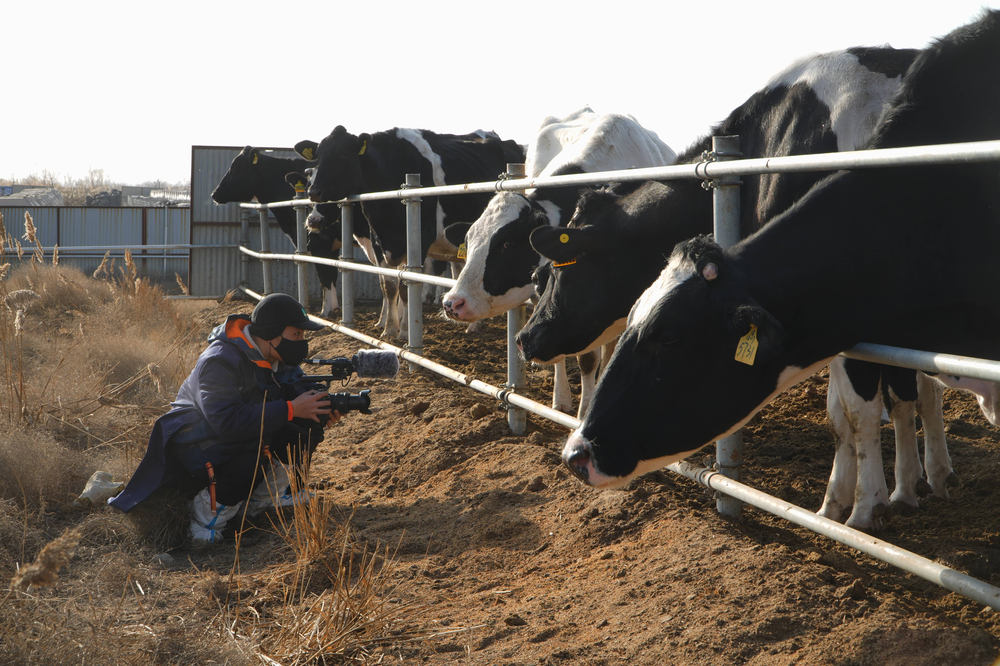
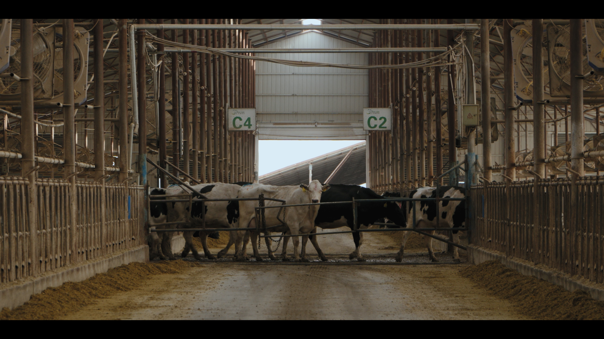
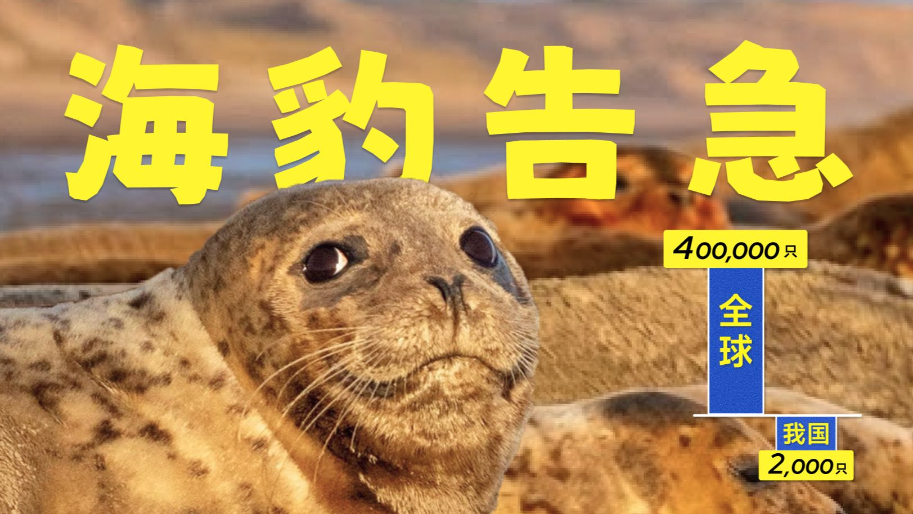
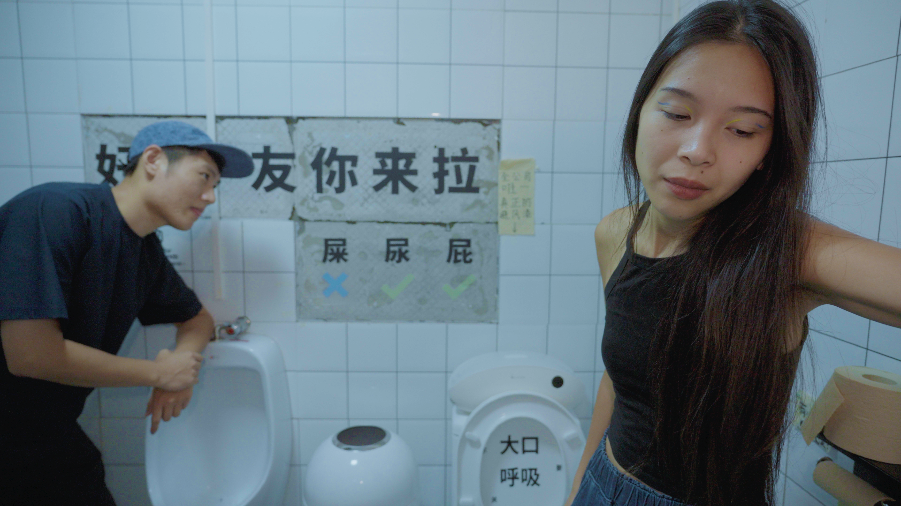
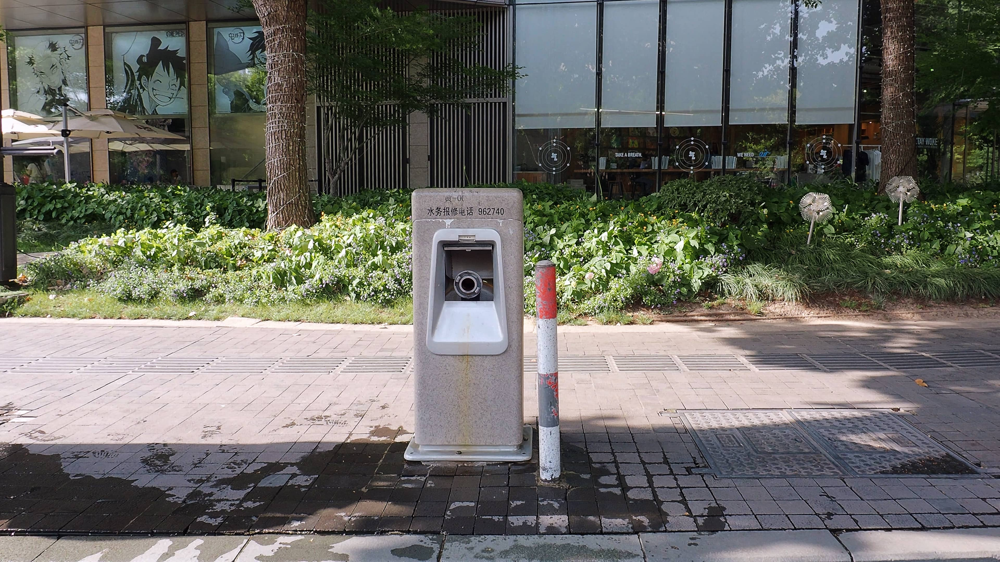
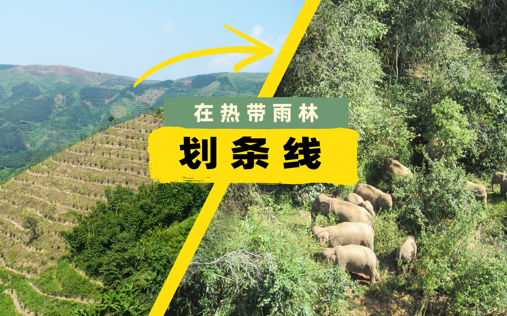
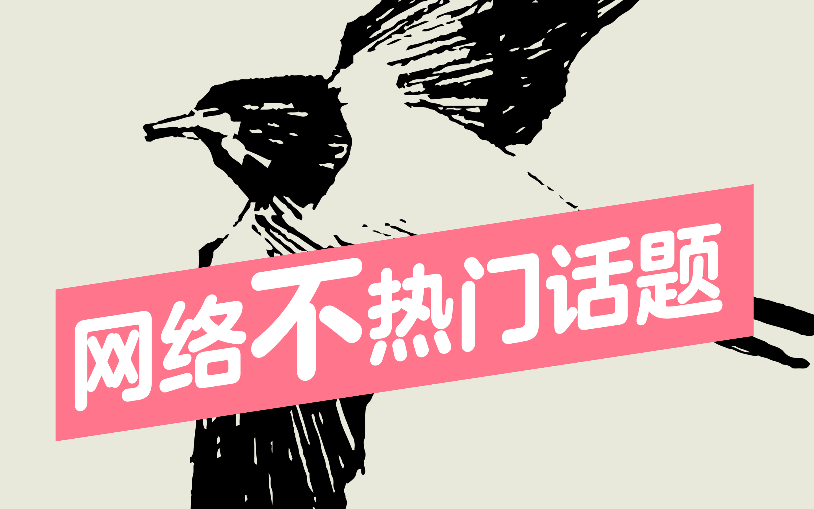

1 / 1

我是平凡。在 2019 年之前，我和大多数人一样，认为"可持续"只是一个宏大的政策词汇。但当我真正站在镜头后，见证了土壤的呼吸、生活的脉搏，以及每一个个体微小行动引发的涟漪，我才意识到：当下生存环境最大的敌人并非破坏，而是漠不关心。
作为一个充满好奇且带点"倔强"的记录者，我深信，影像不应是片面的情绪煽动，而应是理性的延伸。我的创作始于严谨的科学调研——翻阅文献、梳理逻辑、确证信源，在这过程中寻找那些被忽略的故事。我坚持以一种对观众更负责任的创作态度，将晦涩的知识转化为触手可及的温度。我追求的不仅是审美的满足，更是通过影像构建一种连接，生出一股更开放的理性的力量，去重新审视自己与周遭世界的关系。





